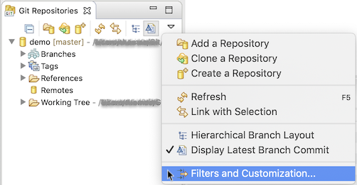
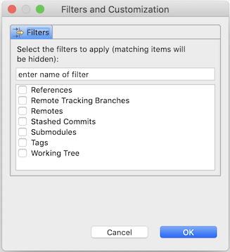
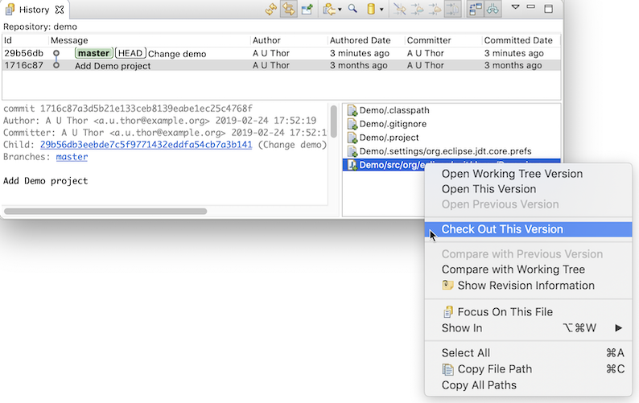
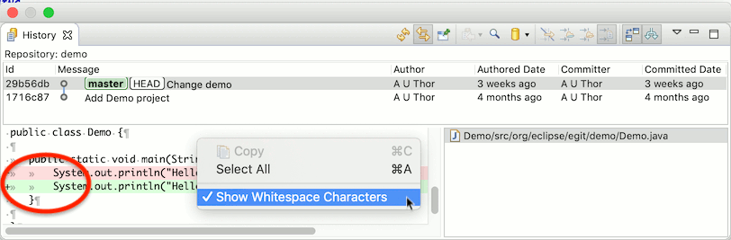

| EGit 5.4 New and Noteworthy | ||
|---|---|---|
|
|
||
| Contributors | ||
EGit 5.4.0 can now handle encrypted new-style OpenSSH private keys, for instance password-protected ed25519 keys, when the "Apache MINA sshd" SSH client is used. (There's a preference setting in the main EGit preference page under Preferences→Team→Git to choose between "Apache MINA sshd" (default) and the older "JSch" library.)
We plan to remove the old JSch SSH implementation completely in a future release of EGit.
The Git Repositories view can now be configured to show less nodes.

In the view menu of the Git Repositories view, choose the "Filters and Customization..." entry. This will open a dialog where you can choose which information should be suppressed:

Checked node types will not be shown in the Git Repositories view. Note that the top repositories nodes and the local branches node cannot be hidden.
In the Git History view there is a new command in the context menu on the file list to check out the selected file versions from that commit. This can be useful to revert individual files to an earlier state, or to a state on another branch.

This command is also available in the Commit Viewer (also for stashes), and in the outline view of the Commit Viewer's unified diff page. The check-out skips files deleted in that commit and submodules contained in the selection. If the check-out would overwrite uncommitted changes, such as when a file to be checked out is modified in the workspace, the user is asked to confirm overwriting.
The diff viewer in the Git History view can now show whitespace characters:

The diff viewer is located in the bottom-left part of the view, below the commit message. When files changed in a commit are selected in the file list bottom-right, the diff viewer shows a unified diff of the changes made to those files in that commit. (For performance reasons, the diff is truncated after 10'000 lines; to see a full unified diff, open the commit in the Commit Viewer via the context menu in the commit table.)
This diff viewer has now a little context menu where the user can enable or disable showing whitespace characters.
EGit 5.4.0 includes lots of less noticeable improvements in the UI, plus a number of bug fixes. The complete list of new features and bug fixes is available in the release notes.
|
|
||
| Contributors |